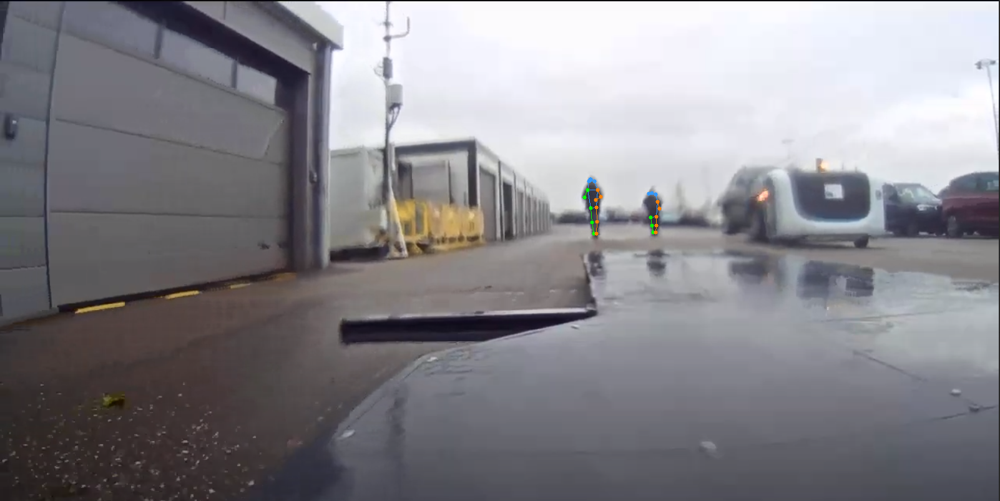
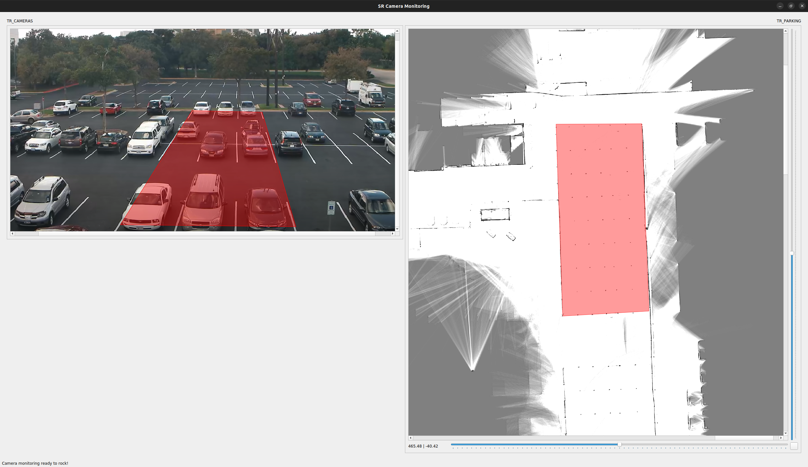

ClearEye Technologies
Because no robotics company should operate
without vision-based AI

We don't pretend like Elon Musk that cameras are enough to operate, but they are definitely a vital element of the perception stack of an up-to-date AGV
Relying on vision is a must-have for :
- safety
- efficiency
We offer a cost-efficient solution to ...
- detect efficiently human presence
- improve localisation performance
- monitor your assets in real-time
to build a true digital twin
Embedded safety
Why : stopping the robot as soon as a human is detected
How : real-time video processing for human detection
Why is our solution
cost-efficient ?
Because we can even perform human skeleton detection with low-res cameras
And process fisheye lenses the same way

Build a true digital twin
By monitoring the parking occupancy
(avoiding de-synchronisations ...)
By detecting unexpected vehicles
(bridging the gap with the safety concern)
By identifying a region of interest on the parking map

Why you should invest in ClearEye Technologies
- Because we address the growing need for enhanced safety and efficiency in robotized environments
- Because the autonomous mobile robot market is forecast to experience significant growth in the coming years
- Because ClearEye technology is well-positioned to capitalize on this growth. The company's camera-based perception system can be integrated into a wide range of autonomous robots, expanding its market reach and potential customer base.
Conclusion
Don't trust competitors' solutions !

Picture this: a parking lot with thousands of vehicles, each waiting to be efficiently transported to its destination. Humans and robots are collaborating seamlessly. Navigating this outdoor labyrinth poses unique safety challenges, and that's our mission at